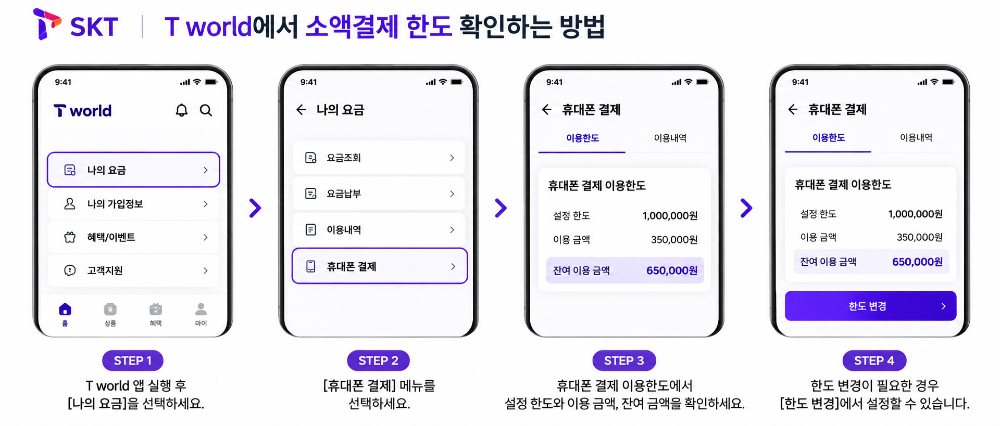
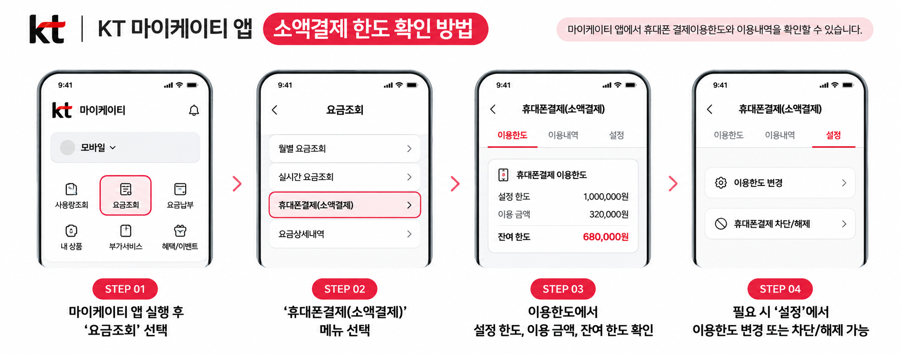
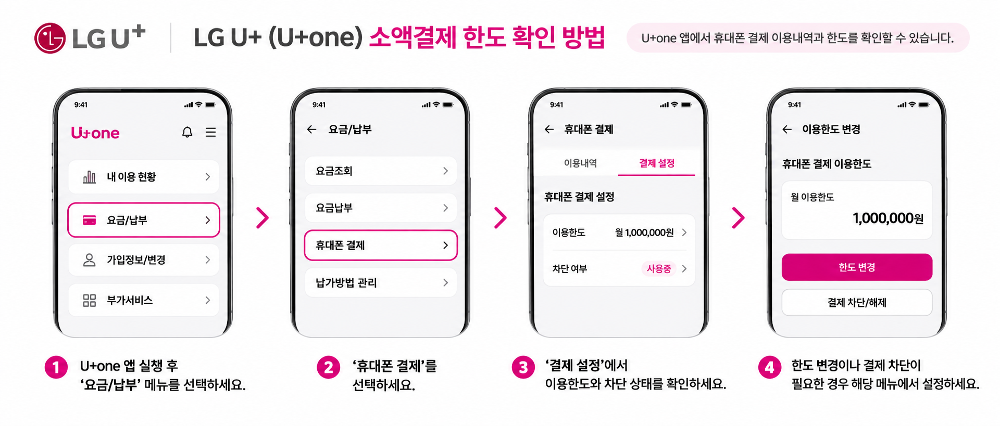
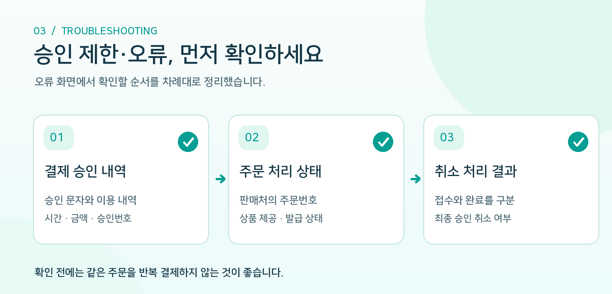
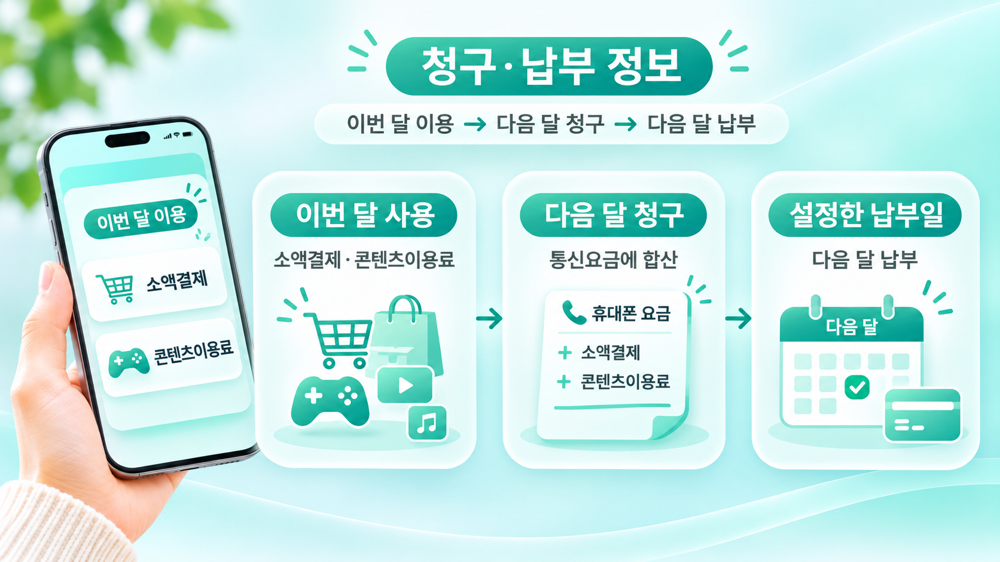

승인 내역 확인
휴대전화로 받은 결제 승인 문자와 통신사 이용 내역을 비교하세요. 결제 날짜와 금액, 승인번호를 확인하면 결제가 실제로 승인되었는지 파악하는 데 도움이 됩니다.
소액결제 현금화, 소액티켓에서 빠르고 정확하게 해결해 드립니다.
휴대폰 소액결제 한도를 활용한 상품권 구매부터 매입대금 지급까지, 복잡한 절차 없이 쉽고 간편하게 이용할 수 있도록 소액티켓에서 안내해 드립니다.
정상적인 매입 거래 완료 후 평균 5분 내 입금! 신속한 거래 확인과 체계적인 정산 절차를 통해 고객이 기다리는 시간을 최소화하고, 정확한 매입대금 지급을 위해 노력하고 있습니다.
24시간 365일 상담을 통해 처음 이용하는 고객부터 기존 고객까지 편리하게 이용할 수 있도록 지원하며, 상품권 매입 조건과 진행 절차를 충분히 확인한 후 거래를 진행합니다.
빠른 입금, 정확한 정산, 편리한 상담. 휴대폰 소액결제 현금화는 소액티켓에서 확인하세요.

휴대폰 소액결제는 온라인에서 상품이나 디지털 콘텐츠를 구매할 때 신용카드나 계좌이체 대신 본인 명의의 휴대전화를 이용해 결제하는 방식입니다. 결제 과정에서는 휴대전화 번호와 본인인증 등을 활용하며, 정상적으로 승인된 금액은 통신사의 요금 청구 일정에 따라 휴대전화 요금에 합산됩니다.
일반적인 카드 결제와 달리 통신사에서 설정한 결제 한도 안에서 이용하며, 통신사와 결제대행사, 판매처의 정책에 따라 실제 결제 가능 여부가 결정됩니다.
휴대폰 소액결제는 온라인 쇼핑몰의 상품 구매뿐 아니라 일부 모바일 서비스와 디지털 콘텐츠 등 다양한 분야에서 활용될 수 있습니다. 다만 모든 상품이나 서비스에 동일하게 적용되는 것은 아니며, 결제수단과 이용 조건은 판매처에 따라 달라질 수 있습니다.
소액결제는 후불 결제 방식이므로 이용 시점에 은행 계좌에서 금액이 바로 출금되지 않더라도 추후 통신요금에 포함되어 청구될 수 있습니다. 따라서 현재 이용 가능한 금액뿐 아니라 납부 예정 금액까지 함께 고려하는 것이 중요합니다.
휴대폰 소액결제는 일반적으로 상품 선택, 결제수단 선택, 휴대전화 정보 입력, 본인인증, 결제 승인, 주문 완료의 순서로 진행됩니다.
온라인 쇼핑몰이나 서비스에서 상품을 선택하고 결제수단으로 휴대폰 결제를 선택하면 통신사와 휴대전화 번호 등을 확인하는 화면이 나타납니다. 이후 서비스에서 요구하는 본인인증을 완료하면 통신사 및 결제대행사의 승인 과정이 진행됩니다.
정상적으로 승인이 완료되면 결제 결과가 표시되고 판매처에서 주문 처리나 상품 제공 절차를 진행합니다.
결제 승인과 실제 주문 완료는 서로 다른 단계일 수 있으므로 결제 승인 문자뿐 아니라 주문 상태도 확인하는 것이 좋습니다.
결제 도중 오류가 발생했다면 동일한 결제를 반복하기 전에 기존 승인 내역을 먼저 확인해야 합니다. 이미 승인된 거래를 다시 진행하면 중복 결제가 발생할 수 있기 때문입니다.
휴대폰 소액결제와 콘텐츠이용료는 모두 휴대전화를 이용해 결제하고, 이용한 금액을 다음 달 통신요금에 합산하여 납부하는 방식입니다. 하지만 결제할 수 있는 상품과 서비스의 종류, 이용 한도, 승인 조건 등에서 차이가 있습니다.
휴대폰 소액결제는 온라인 쇼핑몰에서 상품을 구매하거나 각종 온라인 서비스를 이용할 때 사용할 수 있는 결제 방식입니다. 판매처에서 휴대폰 결제를 지원하는 경우 본인인증 등의 절차를 거쳐 결제할 수 있으며, 사용한 금액은 다음 달 휴대전화 요금에 포함됩니다.
콘텐츠이용료는 앱마켓, 게임, 음악, 영상 등 디지털 콘텐츠를 구매하거나 이용할 때 발생하는 결제 항목입니다. 앱마켓과 콘텐츠 제공 서비스에 따라 결제 가능 여부와 인증 방식, 이용 조건 등이 달라질 수 있습니다.
두 항목은 통신사에서 각각 별도의 이용 한도로 관리할 수 있습니다. 따라서 소액결제 한도가 남아 있다고 해서 콘텐츠이용료에서도 동일한 금액을 사용할 수 있는 것은 아니며, 반대의 경우도 마찬가지입니다.
또한 결제 차단 설정과 승인 정책도 각각 다르게 적용될 수 있으므로, 이용하려는 상품이 휴대폰 소액결제와 콘텐츠이용료 중 어떤 항목에 해당하는지 확인하는 것이 좋습니다.
두 결제 방식의 공통점은 이번 달 이용한 금액이 다음 달 통신요금에 합산되어 청구된다는 점입니다. 결제 항목이 다르더라도 이후 납부해야 할 금액이라는 점은 동일하므로 이용 내역과 청구 금액을 함께 관리하는 것이 중요합니다.
휴대폰 소액결제는 별도의 신용카드 번호나 계좌 정보를 직접 입력하지 않고도 본인 명의 휴대전화로 결제를 진행할 수 있다는 특징이 있습니다.
이용자는 통신사 공식 앱이나 홈페이지 등을 통해 결제 이용 내역과 잔여 한도를 확인할 수 있습니다.
다만 결제 편의성이 높더라도 통신사의 이용 한도와 승인 조건이 적용되므로 모든 결제가 승인되는 것은 아닙니다.
특히 결제 금액은 추후 휴대전화 요금에 합산될 수 있으므로 이용 금액을 체계적으로 관리해야 합니다.
통신요금 미납이나 결제 차단 설정, 신규 개통 회선에 대한 정책 등에 따라 이용이 제한될 수 있다는 점도 함께 이해해야 합니다.
소액티켓은 휴대폰 소액결제를 활용한 모바일상품권 매입 및 현금화 서비스를 운영하고 있습니다.
처음 이용하는 고객도 거래 절차를 이해할 수 있도록 이용 조건과 진행 방법을 안내하고 있습니다.
휴대폰 소액결제를 통해 상품권을 구매하려는 경우, 소액티켓에서 매입 가능한 상품권의 종류와 거래 조건, 적용 매입률 및 예상 지급 금액 등을 상담할 수 있습니다.
상품권 매입 거래가 정상적으로 완료되면 안내된 정산 절차에 따라 매입대금이 지급되며, 고객이 거래 조건을 충분히 확인한 후 진행할 수 있도록 안내합니다.
휴대폰 소액결제를 이용할 때 가장 먼저 확인해야 하는 것은 현재 설정된 결제 한도와 실제 사용할 수 있는 잔여 금액입니다. 통신사에서는 이용자의 회선 상태와 서비스 이용 조건에 따라 소액결제 한도를 설정하며, 이용자는 해당 범위 안에서 휴대전화 결제를 진행할 수 있습니다.
하지만 통신사에서 확인되는 한도가 실제 모든 온라인 결제에서 그대로 사용 가능한 금액을 의미하는 것은 아닙니다. 결제하려는 상품과 판매처, 결제대행사의 정책에 따라 이용 가능한 금액이나 승인 여부가 달라질 수 있습니다. 따라서 단순히 한도가 얼마나 남았는지만 확인하기보다, 이용하려는 서비스에서 휴대폰 결제를 지원하는지와 별도의 제한이 적용되는지도 살펴보는 것이 좋습니다.
휴대폰 소액결제 한도는 가입자마다 다르게 적용될 수 있으며, 신규 개통 여부나 통신요금 납부 상태, 이용 이력 등에 따라서도 제한이 발생할 수 있습니다. 현재 이용 가능한 한도는 본인이 사용하는 통신사의 공식 앱이나 홈페이지에서 확인하는 것이 가장 정확합니다.
휴대폰 소액결제의 월간 한도는 통신사에서 해당 회선에 설정한 일정 기간의 이용 상한 금액입니다. 반면 잔여 이용 금액은 이미 사용한 결제 금액과 취소 처리 등의 상태를 반영해 현재 남아 있는 이용 범위를 나타냅니다.
예를 들어 월간 이용 한도가 50만 원으로 설정되어 있고 이번 달에 20만 원을 정상적으로 사용했다면, 다른 제한이 없다는 가정에서 남은 한도는 30만 원으로 계산할 수 있습니다. 다만 실제 통신사 화면에 표시되는 잔여 금액은 결제 승인이나 취소 처리 상태에 따라 차이가 발생할 수 있으므로 조회된 금액을 기준으로 확인해야 합니다.
월간 한도는 설정된 상한이고 잔여 금액은 현재 사용 가능한 범위를 보여준다는 점에서 차이가 있습니다. 특히 여러 차례 결제를 진행한 경우에는 개별 결제 금액만 기억하기보다 통신사 이용 내역에서 이번 달 전체 사용 금액을 함께 확인하는 것이 좋습니다.
결제가 정상적으로 승인된 직후에는 이용 내역이 반영되기까지 시간이 걸릴 수 있습니다. 반대로 결제를 취소한 경우에도 취소 요청과 실제 승인 취소 처리가 완료되는 시점이 다를 수 있습니다. 따라서 결제 또는 취소 직후 잔여 금액이 예상과 다르게 표시된다면 해당 거래의 처리 상태를 확인하는 것이 좋습니다.
또한 휴대전화 번호를 여러 개 사용하거나 업무용과 개인용 회선을 함께 이용하는 경우에는 실제 결제에 사용할 회선을 정확하게 선택해야 합니다. 서로 다른 번호의 한도와 이용 내역을 혼동하면 결제 가능 금액을 잘못 판단할 수 있습니다.
휴대폰 결제와 콘텐츠이용료가 별도 항목으로 표시되는 경우에도 주의가 필요합니다. 두 항목은 각각 다른 이용 한도와 결제 조건이 적용될 수 있으므로, 현재 결제하려는 상품이 어떤 항목으로 처리되는지 구분해서 확인해야 합니다.
휴대폰 소액결제 한도가 남아 있더라도 모든 결제가 가능한 것은 아닙니다. 실제 승인 여부는 이용 중인 통신사와 결제대행사, 판매처의 정책 및 상품 종류에 따라 달라질 수 있습니다.
휴대폰 소액결제 한도를 확인하는 가장 정확한 방법은 이용 중인 통신사의 공식 앱이나 홈페이지를 확인하는 것입니다. 통신사마다 메뉴 이름과 화면 구성이 다를 수 있지만, 일반적으로 휴대폰 결제 이용 내역과 설정 한도, 한도 변경, 차단 여부를 확인할 수 있는 기능을 제공합니다.
SKT 이용자는 T world에서 휴대폰 결제 이용 상태와 한도, 이용 내역 등을 확인할 수 있습니다.
T world에 로그인한 뒤 '나의 요금 → 휴대폰 결제' 관련 메뉴로 이동하면 현재 이용 한도와 결제 내역을 확인할 수 있습니다. 한도 변경 기능이 제공되는 화면에서는 이용 조건에 따라 설정된 금액을 조정할 수도 있습니다.
현재 한도를 확인할 때는 월간 설정 금액과 이번 달 잔여 금액을 구분해서 살펴보는 것이 좋습니다. 이미 소액결제를 이용한 내역이 있다면 해당 결제 금액이 반영되었는지 확인하고, 취소한 거래가 있다면 실제 취소 처리 상태까지 확인해야 합니다.
또한 휴대폰 결제와 콘텐츠이용료가 각각 구분되어 표시되는 경우에는 결제하려는 서비스에 해당하는 항목을 확인해야 합니다. 한쪽 항목의 이용 가능 금액이 남아 있더라도 다른 항목에서 동일하게 사용할 수 있는 것은 아닙니다.
한도 조정을 원하는 경우에는 T world에서 제공하는 공식 변경 절차를 이용해야 하며, 본인의 회선에 적용된 허용 범위와 변경 조건에 따라 결과가 달라질 수 있습니다.

KT 이용자는 마이케이티 앱 또는 KT 홈페이지에서 휴대폰 결제 한도와 이용 내역을 확인할 수 있습니다.
마이케이티 앱에서는 '메뉴 → 마이 → 요금/서비스 → 요금조회 → 휴대폰결제 내역' 순서로 이동해 관련 정보를 확인할 수 있습니다. 이용한도 상세내역에서는 현재 설정된 한도와 한도 변경 및 결제 차단 메뉴 등을 확인할 수 있습니다.
휴대폰 소액결제 이용동의가 완료되지 않은 경우에는 별도의 동의 및 본인인증 절차가 필요할 수 있습니다. 특히 신규 개통이나 번호이동 이후에는 기존에 사용하던 통신사의 설정과 현재 KT 회선에 적용된 조건이 다를 수 있으므로 이용 상태를 확인하는 것이 좋습니다.
한도를 변경할 때는 본인에게 허용된 범위 안에서 금액을 선택하게 되며, 한도 상향 시에는 추가적인 인증 절차가 요구될 수 있습니다. 변경 요청을 완료했다면 실제로 새로운 한도가 적용되었는지도 다시 확인하는 것이 좋습니다.
현재 이용 한도와 실제 결제 승인 가능 금액은 서로 다를 수 있습니다. 따라서 한도를 상향했다고 해서 모든 결제가 정상적으로 승인되는 것은 아니며, 판매처나 결제대행사의 별도 제한이 적용될 수도 있습니다.

LG U+ 이용자는 U+one 앱이나 공식 홈페이지를 통해 휴대폰 결제 이용 상태와 한도 설정을 확인할 수 있습니다.
U+one 앱에서는 '메뉴 → MY → 휴대폰 결제 → 결제 한도 설정/변경' 경로에서 한도를 조정하는 방법을 안내하고 있습니다. 일반·정기 결제와 스토어·콘텐츠 결제처럼 서비스 항목이 구분되는 경우에는 실제 이용하려는 결제 항목을 선택하여 확인하는 것이 좋습니다.
현재 설정된 한도가 적절한지 살펴보고, 변경이 필요한 경우에는 앱에서 제공하는 절차를 이용하면 됩니다. 한도 상향 시 본인인증이 필요할 수 있으며, 본인의 회선 조건에 따라 변경 가능 범위에 제한이 적용될 수 있습니다.
또한 이용 내역을 확인할 때는 결제 날짜와 금액, 이용 상태를 함께 살펴보는 것이 좋습니다. 이미 결제한 금액이나 취소한 거래가 있다면 실제 이용 내역과 잔여 금액에 정상적으로 반영되었는지 확인해야 합니다.
앱 업데이트로 메뉴 이름이나 위치가 변경된 경우에는 공식 앱에서 '휴대폰 결제'를 검색하거나 고객센터의 안내를 참고하면 됩니다.

휴대폰 소액결제 한도는 통신사에서 허용하는 범위 안에서 이용자가 직접 조정할 수 있는 경우가 있습니다. 현재 설정된 한도가 본인의 이용 계획보다 높다면 필요한 금액만큼 낮추는 방법을 고려할 수 있으며, 소액결제를 이용하지 않는다면 결제 차단 기능을 활용할 수도 있습니다.
한도를 높이고 싶은 경우에는 현재 회선에 적용된 최대 허용 금액과 변경 가능 여부를 먼저 확인해야 합니다. 통신요금 미납이나 연체 이력, 신규 개통 여부, 이용 기간 등의 조건에 따라 한도 상향이 제한될 수 있기 때문입니다.
또한 통신사에서 최대 한도를 높일 수 있다고 안내하더라도 실제 개별 결제 승인까지 보장되는 것은 아닙니다. 이용자가 설정한 금액은 결제에 사용할 수 있도록 허용된 범위일 뿐이며, 실제 승인 과정에서는 결제대행사와 판매처의 정책이 별도로 적용될 수 있습니다.
결제 차단 기능은 휴대전화를 이용한 원하지 않는 결제를 예방하는 데 도움이 됩니다. 평소 소액결제를 사용하지 않거나 지출을 제한하고 싶은 경우에는 한도를 낮게 설정하거나 차단 여부를 확인하는 것이 좋습니다.
차단 기능을 이용할 때는 휴대폰 결제와 콘텐츠이용료의 설정이 구분되어 있는지도 살펴봐야 합니다. 한 항목만 차단한 경우 다른 항목에는 기존 설정이 유지될 수 있으므로 필요한 항목을 각각 확인하는 것이 좋습니다.
한도 변경이나 차단 해제는 통신사에서 제공하는 공식 절차를 통해 진행해야 합니다. 본인인증과 이용약관 동의가 필요한 경우에는 해당 절차를 완료해야 하며, 일부 제한 설정은 일반적인 한도 변경과 다른 방식으로 관리될 수 있습니다.
한도를 변경한 뒤에는 변경 요청 완료 화면만 확인하지 말고, 실제 설정된 금액과 차단 상태가 정상적으로 반영되었는지도 다시 확인하는 것이 좋습니다.
휴대전화를 새로 개통하거나 통신사를 변경한 경우에는 기존에 사용하던 한도와 동일한 조건이 적용되지 않을 수 있습니다.
통신사는 신규 회선에 대해 이용 기간이나 본인확인 상태, 서비스 이용 조건 등을 고려하여 별도의 한도나 제한을 적용할 수 있습니다. 이러한 제한은 부정사용 방지와 이용자 보호 등을 목적으로 운영될 수 있으며, 통신사별 정책과 가입 조건에 따라 적용 방식이 달라집니다.
번호이동을 한 경우에도 이전 통신사에서 사용하던 소액결제 한도가 새로운 통신사로 그대로 이전된다고 판단해서는 안 됩니다. 새로운 통신사의 이용동의 상태와 설정 한도, 결제 가능 여부를 별도로 확인해야 합니다.
또한 통신요금 미납이나 연체 이력이 있는 회선은 한도 상향 또는 소액결제 이용에 제한이 발생할 수 있습니다. 미납금을 납부했다고 하더라도 실제 제한 해제 시점과 조건은 통신사 정책에 따라 다를 수 있으므로 현재 회선 상태를 확인하는 것이 중요합니다.
따라서 신규 개통이나 번호이동 이후 소액결제를 이용하려는 경우에는 다른 이용자의 한도나 과거에 사용했던 금액을 기준으로 판단하기보다, 현재 통신사에서 조회되는 본인의 이용 조건을 기준으로 확인하는 것이 좋습니다.
휴대폰 결제에는 통신사의 이용 한도뿐 아니라 결제대행사와 판매처에서 적용하는 별도의 조건이 있을 수 있습니다. 일부 판매처는 상품 종류에 따라 휴대폰 결제를 지원하지 않거나, 특정 상품에 별도의 구매 금액과 이용 횟수 제한을 설정할 수 있습니다.
예를 들어 통신사에서 30만 원의 잔여 한도를 확인했더라도 이용하려는 판매처에서 해당 상품의 휴대폰 결제를 제한하고 있다면 주문 금액이 30만 원보다 적더라도 결제가 승인되지 않을 수 있습니다.
또한 같은 금액의 결제를 요청하더라도 판매처와 결제대행사가 다르면 승인 결과가 달라질 수 있습니다. 과거에 정상적으로 결제한 경험이 있다고 해서 현재 동일한 금액이 반드시 승인되는 것도 아닙니다.
따라서 한도가 남아 있는데 결제가 거절된다면 먼저 어떤 단계에서 제한이 발생했는지 확인해야 합니다. 통신사 잔여 한도 확인 단계에서 문제가 발생한 것인지, 본인인증 과정에서 오류가 발생한 것인지, 결제대행사 승인 과정에서 거절된 것인지에 따라 확인해야 할 항목이 달라집니다.
한도 부족이 원인으로 확인되지 않은 상태에서 무조건 한도를 높이는 것은 문제 해결에 도움이 되지 않을 수 있습니다. 결제 화면에 표시된 오류 문구와 이용 조건을 먼저 살펴보고, 필요한 경우 해당 통신사나 결제 서비스를 통해 제한 사유를 확인하는 것이 좋습니다.
휴대폰 소액결제 한도를 확인할 때는 세 가지를 구분하면 이해하기 쉽습니다.
첫 번째는 통신사가 해당 회선에 설정한 월간 이용 한도입니다. 이는 일정 기간 동안 이용할 수 있도록 설정된 상한 금액입니다.
두 번째는 이미 사용한 결제 금액 등을 반영한 현재 잔여 이용 금액입니다. 월간 한도가 충분하더라도 이번 달에 이미 여러 번 결제를 진행했다면 남아 있는 금액은 줄어들 수 있습니다.
세 번째는 실제 결제하려는 상품과 서비스에 적용되는 개별 거래의 승인 가능 여부입니다. 이는 통신사 한도뿐 아니라 판매처와 결제대행사의 정책에 따라 결정될 수 있습니다.
또한 결제 한도는 이용자가 사용할 수 있도록 설정된 금액이지, 반드시 사용해야 하는 금액은 아닙니다. 현재의 지출 계획과 이후 청구될 통신요금 등을 고려하여 필요한 범위 안에서 이용하는 것이 좋습니다.
통신사 월간 한도 ≠ 현재 잔여 이용 금액 ≠ 개별 거래의 실제 승인 가능 금액
휴대폰 소액결제를 이용하기 전에는 현재 회선에 설정된 한도와 잔여 금액을 확인하고, 결제하려는 상품과 판매처에 별도의 제한이 있는지도 살펴보는 것이 좋습니다.
휴대폰 소액결제를 진행하다 보면 이용 가능한 한도가 남아 있는데도 결제가 승인되지 않거나, 본인인증을 완료했는데 오류가 발생하는 경우가 있습니다. 또한 결제 승인 문자를 받았지만 실제 주문이 완료되지 않거나, 결제 화면이 중간에 종료되는 상황도 발생할 수 있습니다.
이러한 문제는 통신사 한도 부족뿐 아니라 휴대전화 회선 상태, 소액결제 차단 설정, 결제대행사(PG사)의 승인 조건, 판매처의 주문 처리 상태 등 여러 요인에 따라 발생할 수 있습니다.
오류가 발생했을 때는 같은 결제를 반복해서 시도하기보다 어떤 단계에서 문제가 발생했는지 먼저 확인하는 것이 중요합니다. 오류 위치와 안내 문구를 확인하면 불필요한 중복 결제를 예방하고 정확한 처리 상태를 파악하는 데 도움이 됩니다.
휴대폰 소액결제는 일반적으로 결제수단 선택, 휴대전화 정보 입력, 본인인증, 결제 승인, 주문 완료 순서로 진행됩니다. 각 단계에서 발생하는 오류는 원인이 서로 다를 수 있으므로 문제가 시작된 위치를 확인해야 합니다.
휴대전화 번호나 통신사 선택 단계에서 진행되지 않는다면 입력한 번호와 통신사가 정확한지, 이용 중인 회선이 정상적으로 유지되고 있는지 확인하는 것이 좋습니다. 번호를 변경했거나 통신사를 이동한 경우에는 현재 가입된 통신사 정보를 기준으로 결제를 진행해야 합니다.
본인인증 단계에서 오류가 발생했다면 인증번호가 정상적으로 도착했는지, 입력한 인증번호가 정확한지, 인증 유효시간이 지나지 않았는지 살펴봐야 합니다. 인증 문자가 지연되거나 차단된 경우에는 휴대전화의 문자 수신 상태와 스팸 차단 설정도 함께 확인할 필요가 있습니다.
본인인증이 완료되었는데 결제 승인이 거절된다면 통신사 한도와 결제 차단 설정, 요금 미납 여부, 결제대행사의 승인 조건 등을 확인해야 합니다. 통신사에서 한도가 정상적으로 표시되더라도 해당 거래에는 별도의 승인 제한이 적용될 수 있습니다.
결제 승인 이후 주문 완료 화면으로 이동하지 못했다면 즉시 재결제하지 말고 승인 문자와 판매처 주문 내역을 먼저 확인하는 것이 좋습니다.

휴대폰 소액결제 한도가 충분하더라도 실제 거래가 승인되지 않을 수 있습니다. 이는 통신사가 설정한 전체 이용 한도와 개별 결제에 적용되는 승인 조건이 서로 다르기 때문입니다.
대표적인 원인으로는 통신요금 미납, 소액결제 차단 설정, 신규 개통 회선의 이용 제한, 결제대행사 정책, 판매처별 결제 제한 등이 있습니다.
특히 일부 상품과 디지털 콘텐츠에는 일반적인 소액결제와 다른 결제 조건이 적용될 수 있습니다. 이용하려는 판매처에서 특정 결제수단을 지원하지 않거나 상품별 구매 금액을 제한하는 경우에도 결제가 거절될 수 있습니다.
또한 이전에 정상적으로 결제한 경험이 있더라도 이후 거래에서 동일한 승인 결과가 나온다고 보장할 수는 없습니다. 통신사와 결제대행사, 판매처의 정책은 거래 시점과 이용 조건에 따라 다르게 적용될 수 있습니다.
따라서 한도가 남아 있는데 결제가 안 된다면 무조건 한도를 높이기보다는 결제 화면의 오류 문구를 확인하고, 해당 거래에 적용되는 제한 사유를 먼저 살펴보는 것이 좋습니다.
휴대폰 소액결제는 통신사와 결제대행사, 판매처의 시스템을 통해 처리됩니다. 이 과정에서 어느 단계에 문제가 발생했는지에 따라 확인해야 할 사항이 달라집니다.
통신사와 관련된 제한에는 회선 이용 상태, 미납 여부, 소액결제 차단 설정, 이용 한도 등이 포함될 수 있습니다. 이러한 사항은 이용 중인 통신사의 공식 앱이나 홈페이지에서 확인할 수 있습니다.
결제대행사와 관련된 오류는 해당 거래를 승인 요청하는 과정에서 발생할 수 있으며, 결제 금액이나 상품 종류, 이용 조건 등에 따라 제한이 적용될 수 있습니다.
판매처에서 발생하는 오류는 주문번호 생성, 상품 제공, 발급 처리 등의 단계와 관련될 수 있습니다. 결제가 승인되었더라도 판매처의 주문 처리 상태가 완료되지 않은 경우에는 별도로 확인해야 합니다.
따라서 화면에 나타난 오류 문구와 결제 시각, 이용처를 확인하면 어느 단계에서 문제가 발생했는지 파악하는 데 도움이 됩니다.
휴대전화로 결제 승인 문자를 받았지만 판매처의 주문 화면에는 완료 내역이 표시되지 않는 경우가 있습니다. 이러한 상황은 결제 승인과 주문 처리 과정이 서로 다른 단계에서 진행되기 때문에 발생할 수 있습니다.
먼저 결제 승인 문자에 표시된 금액과 시각을 확인하고, 판매처의 주문 내역에서 해당 거래가 정상적으로 생성되었는지 확인해야 합니다.
주문번호가 생성되었다면 주문 상태가 결제 완료인지, 상품 준비 중인지, 발급 완료인지 구분해서 살펴보는 것이 좋습니다. 디지털 상품이나 모바일 이용권은 결제 승인 이후 상품 제공 또는 발급 처리가 별도로 진행될 수 있습니다.
반대로 결제 승인 문자가 도착했는데 판매처에서 주문번호를 확인할 수 없다면 결제 시각과 금액을 정리하여 해당 판매처에 문의하는 것이 좋습니다.
이 과정에서 동일한 주문을 다시 결제하면 중복 승인이 발생할 수 있으므로 기존 거래의 상태를 확인하기 전에는 재결제를 피해야 합니다.
휴대폰 소액결제 이용 내역에 같은 금액이 여러 번 표시된다면 실제 중복 결제인지, 결제 요청과 승인 알림이 중복으로 표시된 상황인지 구분해야 합니다.
먼저 통신사 결제 이용 내역에서 결제 시각과 금액, 이용처를 비교하고, 판매처의 주문 내역에서도 동일한 금액의 주문이 여러 건 생성되었는지 확인하는 것이 좋습니다.
결제 과정에서 화면이 멈추거나 오류가 발생해 재시도했다면 각각의 거래가 실제로 승인되었는지 확인해야 합니다.
승인 내역이 여러 건 존재한다면 판매처의 주문 처리 상태와 함께 확인하고, 실제로 중복된 거래가 있다면 해당 판매처의 취소 및 환불 절차를 확인해야 합니다.
중복 결제로 의심되는 상황에서는 결제 승인 문자와 주문번호, 이용 내역을 보관해 두면 거래 상태를 확인하는 데 도움이 됩니다.
휴대폰 소액결제 취소를 요청했다고 해서 모든 결제 내역이 즉시 사라지는 것은 아닙니다. 취소 요청 접수와 실제 승인 취소 완료는 서로 다른 처리 단계일 수 있습니다.
판매처에서 취소 요청을 접수한 이후 결제대행사와 통신사에 취소 정보가 반영되기까지 시간이 필요할 수 있으며, 결제 시점과 청구 일정에 따라 처리 방식도 달라질 수 있습니다.
따라서 취소를 요청한 경우에는 판매처 주문 상태뿐 아니라 실제 결제 승인 취소 여부를 확인해야 합니다. 취소 요청 상태로만 표시되어 있다면 최종 처리 결과가 확인될 때까지 관련 내역을 보관하는 것이 좋습니다.
이미 휴대전화 요금에 청구된 결제의 취소 또는 환불은 별도의 정산 절차가 적용될 수 있으므로, 해당 거래를 처리한 판매처와 통신사의 안내를 확인해야 합니다.
휴대폰 소액결제 오류를 문의할 때는 문제 상황을 구체적으로 설명할 수 있도록 관련 정보를 정리해 두는 것이 좋습니다.
결제를 진행한 날짜와 시간, 결제 금액, 이용한 판매처, 결제대행사 이름, 주문번호와 승인번호, 화면에 표시된 오류번호 등을 확인해 두면 도움이 됩니다.
통신사 이용 제한이나 차단 설정과 관련된 문제라면 이용 중인 통신사의 공식 고객센터에서 회선 상태를 확인하는 것이 좋습니다. 결제 승인 요청 과정의 오류는 해당 결제대행사에서 안내하는 내용을 확인할 수 있으며, 주문 누락이나 상품 발급 관련 문제는 판매처의 주문 정보를 기준으로 확인해야 합니다.
오류 화면을 캡처하여 보관하는 것도 도움이 되지만, 인증번호나 비밀번호, 상품권 PIN 번호처럼 타인에게 노출되면 안 되는 정보는 포함하지 않도록 주의해야 합니다.
문제의 원인을 정확하게 구분하면 여러 곳에 반복해서 문의하는 불편을 줄이고, 거래 상태를 확인하는 데 필요한 정보를 보다 효율적으로 전달할 수 있습니다.
휴대전화로 받은 결제 승인 문자와 통신사 이용 내역을 비교하세요. 결제 날짜와 금액, 승인번호를 확인하면 결제가 실제로 승인되었는지 파악하는 데 도움이 됩니다.
판매처의 주문번호와 상품 제공 또는 발급 상태를 확인하세요. 결제 승인과 주문 완료는 서로 다른 단계일 수 있으므로 주문이 정상적으로 처리되었는지 구분해서 살펴보는 것이 좋습니다.
결제 취소를 요청했다면 최종 승인 취소가 완료되었는지 확인하세요. 단순히 취소 요청이 접수된 상태와 실제 취소 처리가 완료된 상태는 다를 수 있으므로 처리 결과를 확인하는 것이 중요합니다.
기억해 주세요. 결제가 정상적으로 진행되지 않는다면 같은 결제를 반복하기 전에 승인 내역과 주문 상태, 오류 메시지를 먼저 확인하는 것이 좋습니다.
휴대폰 소액결제와 콘텐츠이용료는 이번 달에 사용한 금액을 다음 달 통신요금에 합산하여 납부하는 후불 결제 방식입니다. 상품이나 디지털 콘텐츠를 구매할 때 은행 계좌에서 결제 금액이 즉시 출금되는 것이 아니라, 통신사의 요금 청구 일정에 따라 다음 달 휴대전화 요금에 포함됩니다.
예를 들어 11월에 휴대폰 소액결제로 20만 원을 사용했다면 일반적으로 해당 금액은 12월 통신요금에 포함되어 청구됩니다. 이용자는 본인이 설정한 다음 달 요금 납부일에 기본 통신요금과 소액결제 이용금액 등을 함께 납부하게 됩니다.
콘텐츠이용료도 마찬가지로 다음 달 통신요금에 합산될 수 있습니다. 따라서 두 항목을 모두 이용했다면 각각의 사용 금액을 확인하고, 다음 달 전체 납부 예정 금액에 얼마나 포함되는지 살펴보는 것이 좋습니다.
휴대폰 소액결제는 이번 달 이용 → 다음 달 요금 청구 → 다음 달 지정 납부일에 납부하는 방식으로 이해하면 쉽습니다.
이번 달에 이용한 소액결제 금액은 통신사의 요금 산정 기간에 따라 집계되고, 다음 달 발행되는 요금 명세서에 포함됩니다. 이후 이용자가 설정한 납부일에 자동이체 또는 직접 납부 방식으로 요금을 납부하게 됩니다.
예를 들어 11월 5일과 11월 20일에 각각 소액결제를 이용했다면, 두 결제 금액은 일반적으로 12월 통신요금에 합산되어 청구됩니다. 이용자는 12월의 지정된 납부일에 해당 금액을 포함한 전체 통신요금을 납부하게 됩니다.
실제 청구서 발행일과 납부일은 통신사 및 이용자의 설정에 따라 다를 수 있지만, 일반적인 이용 구조는 이번 달 사용한 금액을 다음 달 요금에 합산하여 납부하는 방식입니다.
결제일은 휴대폰 소액결제나 콘텐츠이용료를 이용하여 상품 또는 서비스를 구매한 날짜입니다. 해당 날짜에 결제가 승인되더라도 결제 금액이 은행 계좌에서 즉시 출금되는 것은 아닙니다.
청구일은 통신사가 이용 내역을 집계하여 다음 달 요금 명세서를 발행하는 시점입니다. 기본 통신요금과 소액결제, 콘텐츠이용료 등의 금액이 함께 표시될 수 있습니다.
납부일은 이용자가 설정한 날짜에 실제 통신요금을 납부하는 날입니다. 등록된 자동이체 계좌나 카드로 납부하거나 통신사에서 제공하는 직접 납부 방식을 이용할 수 있습니다.
따라서 휴대폰 소액결제를 이용할 때는 결제한 날짜뿐 아니라 다음 달에 납부할 금액도 함께 확인하는 것이 중요합니다.

휴대폰 소액결제와 콘텐츠이용료는 별도의 이용 항목으로 관리될 수 있지만, 요금 청구 시에는 두 항목의 이용금액이 다음 달 통신요금에 함께 포함될 수 있습니다.
예를 들어 11월에 소액결제 20만 원과 콘텐츠이용료 10만 원을 사용했다면, 일반적으로 12월 통신요금에는 두 항목을 합한 30만 원이 추가로 반영됩니다. 여기에 기본 요금제와 부가서비스 등의 이용요금이 더해져 전체 청구 금액이 결정됩니다.
따라서 한 가지 결제 항목만 확인하기보다 휴대폰 소액결제와 콘텐츠이용료의 이용 내역을 각각 살펴보는 것이 좋습니다.
SKT·KT·LG U+ 등 통신사 공식 앱이나 홈페이지에서 이용 내역과 청구 금액을 확인할 수 있습니다.
이번 달 이용 중이라면 현재까지 사용한 소액결제 및 콘텐츠이용료 내역을 확인하고, 다음 달 요금 명세서가 발행되면 실제 청구된 금액을 확인하면 됩니다.
요금 명세서에는 소액결제 이용금액 외에도 기본 요금과 부가서비스 이용료 등이 포함될 수 있으므로, 총납부 예정 금액을 기준으로 확인하는 것이 좋습니다.
자동이체를 설정한 고객은 다음 달 지정된 납부일에 등록된 계좌나 카드로 통신요금을 납부할 수 있습니다. 소액결제와 콘텐츠이용료가 청구 금액에 포함되어 있다면 해당 금액도 함께 납부 대상이 됩니다.
직접 납부를 이용하는 경우에는 통신사 공식 앱이나 홈페이지에서 안내하는 납부 방법을 이용할 수 있습니다.
납부일 이전에 미리 요금을 납부하려는 경우에는 통신사의 선납 및 납부 처리 기준을 확인하는 것이 좋습니다. 이미 자동이체가 진행 중인 상태에서 중복 납부가 발생하지 않도록 납부 상태도 함께 확인해야 합니다.
다음 달 납부일에 통신요금을 정상적으로 납부하지 못하면 미납 상태가 발생할 수 있습니다. 통신사 및 결제대행사 정책에 따라 소액결제와 콘텐츠이용료의 추가 이용이 제한될 수 있으며, 회선 이용 조건에도 영향을 줄 수 있습니다.
미납 금액을 납부하더라도 이용 제한이 즉시 해제된다고 보장할 수는 없습니다. 통신사의 처리 일정과 이용 조건에 따라 실제 이용 가능 시점이 달라질 수 있으므로 납부 완료 후 현재 상태를 확인하는 것이 좋습니다.
휴대폰 소액결제나 콘텐츠이용료 결제를 취소하면 판매처의 취소 처리와 결제 승인 취소가 정상적으로 완료되었는지 확인해야 합니다.
다음 달 요금 명세서가 확정되기 전에 취소가 처리되면 청구 금액에서 제외되거나 조정될 수 있습니다. 이미 청구가 확정된 거래라면 취소 및 환불 처리 시점에 따라 이후 정산 과정에서 반영될 수 있습니다.
따라서 취소 요청만 확인하기보다 실제 승인 취소 완료 여부와 통신요금 반영 결과를 함께 확인하는 것이 좋습니다.
한 달 동안 여러 차례 소액결제와 콘텐츠이용료를 사용했다면 각각의 결제 금액을 합산하여 다음 달 예상 청구 금액을 확인하는 것이 좋습니다.
개별 결제 금액이 작더라도 여러 건이 누적되면 다음 달 납부해야 할 금액이 커질 수 있습니다. 이용한 날짜와 금액, 결제 항목을 구분해서 확인하면 전체 사용 금액을 보다 쉽게 관리할 수 있습니다.
휴대폰 소액결제는 이용 시점에 즉시 출금되지 않기 때문에 실제 사용한 금액을 잊기 쉽습니다. 따라서 통신사 앱에서 이용 내역을 주기적으로 확인하고, 다음 달 납부 가능한 범위 안에서 이용하는 것이 중요합니다.